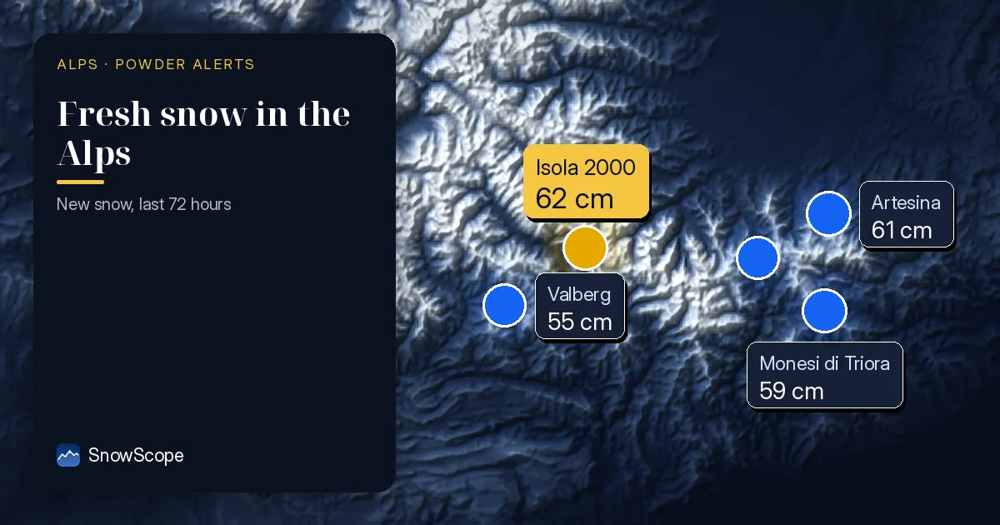

Fresh snow in the Alps: 62 cm in 72 hours at Isola 2000 (6 November)
Three days of storms brought 55 to 62 cm of new snow across the southern Alps. Isola 2000, Artesina, Monesi di Triora and Riserva Bianca all caught the heaviest falls, with powder still fresh on upper slopes despite thin early-season coverage.
See the live snow forecast for Isola 2000 in the SnowScope appSnow depth, powder alerts and the 3D map, free.
Which resorts got the most snow
Isola 2000 led the region with 62 cm in three days. Artesina and Monesi di Triora followed closely at 61 cm and 59 cm. Valberg and Riserva Bianca also caught significant falls of 55 cm each. Friday 6 November saw lighter snow across all four: 7 to 8 cm in 24 hours as the system moved through.
By Friday morning, 725 of 1,178 Alpine resorts had snow on their upper slopes. The region counted 39,100 km² of snow cover, down from 47,470 km² two days earlier as lower elevations melted off.
| Resort | Snow depth | New snow, 72 h | Coming, next days | Top |
|---|---|---|---|---|
| Isola 2000 | 19 cm | 62 cm | 3 cm | 2,601 m |
| Artesina | 21 cm | 61 cm | 1 cm | 2,091 m |
| Monesi di Triora | 16 cm | 59 cm | 1 cm | 2,157 m |
| Valberg | 10 cm | 55 cm | 0 cm | 2,012 m |
| Riserva Bianca | 21 cm | 55 cm | 2 cm | 2,054 m |

Snow depth by height: where powder stays longest
Upper slopes hold the best snow. At Isola 2000, the peak at 2,601 m has 17 cm, the mid-mountain zone sits at 15 cm, and the base sits at 12 cm. The story is similar at Artesina: only the top (2,091 m) keeps useful cover at 16 cm, while mid-mountain (1,446 m) has just 1 cm and the base (801 m) is bare.
Early-season snow is thin by winter standards. Monesi di Triora, at 2,157 m, holds 15 cm at the summit but drops to 6 cm at 1,764 m. This is why altitude matters most in November: every 100 m down costs depth and stability.

Ground truth: what stations measured
Plattkopf at 2,220 m recorded 30 cm of snow on the ground on 2 November, with 8 cm that fell in 24 hours. Schönbüel at 1,777 m had 14 cm total and 11 cm of fresh fall. Feuerkogel, lower at 1,618 m, measured only 9 cm on 1 November.
These station values reflect the same storm system that hit the resorts. The match between stations and estimates is close at altitude; both confirm that snow is thickest above 2,000 m and thins fast below 1,700 m.
Wet snow and freezing levels ahead
The freezing level—the height where snow turns to rain—rises through the week. On 6 November it peaks at 2,350 m; by 9 November it climbs to 2,590 m at Isola 2000. This means upper slopes stay dry and cold, but mid-mountain and lower runs risk wet, heavy snow if rain reaches them.
At Artesina, the freezing level reaches 2,750 m by 8 November, above the resort top of 2,091 m. If any rain falls, it hits even the highest terrain. Riserva Bianca faces the same risk. After a freeze overnight, those slopes turn icy; fresh tracks the morning after are skier-friendly, but afternoon sun on wet-turned-icy snow is tricky.
What comes next: the forecast week
More snow is forecast but light. Isola 2000 expects 3 cm by 9 November, Riserva Bianca 2 cm, Artesina and Monesi di Triora about 1 cm each. Friday to Sunday bring little or no fresh fall at most resorts. This is the window to ski the new powder before it sets and hardens.
The pattern then quietens. By 9 November, the main storm has passed. Forecasts a few days ahead shift often: check the map again on the morning you plan to travel to see any late changes.
Early-season snow: what to watch
November snow is thin and often sits on bare rock. Isola 2000's 19 cm upper-slope average is well above its usual 1 cm for this date—a reminder that this was an unusually wet storm—but it is still modest cover. Rocks can hide under shallow snow; walk exposed ridges with care.
Wind drifts powder into gullies and hollows on lee slopes while scour stripping scours the windward side. North-facing slopes trap cold and shade and keep powder fluffier longer than south faces, which see sun and sag by mid-morning. Plan your run choice around time of day and slope aspect to chase fresh tracks longest.
Tips for skiers
- Ski high: upper slopes (above 2,200 m) hold the thickest, longest-lasting snow. Lower terrain is thin and may expose rock.
- Go early: powder is best in the first hours after snow stops, before the sun weakens it and crowds track it up.
- Choose north-facing slopes in the morning and afternoon, and south faces in early morning before the sun turns them soft.
- Before you ski off-piste or go touring, check the official avalanche bulletin for your area. Fresh snow on steep slopes raises avalanche risk in the first days.
- Get a powder alert in the SnowScope app: it tells you when Isola 2000, Artesina and other resorts get fresh snow, so you can plan your trip in time.
About these numbers
Resort snow depths are the deepest snow on the resort's upper slopes on the date shown; they are estimates for an area, not a measurement at one point. Forecasts can change. Always read the official avalanche bulletin before going off-piste.
Official avalanche bulletins: EAWS (Alps)
Cite this report
For research, teaching or the press: the numbers and charts are free to reuse under CC BY 4.0 with this citation.
SnowScope (2026), Fresh snow in the Alps: 62 cm in 72 hours at Isola 2000 (6 November), https://snowscope.app/blog/en/2026/11/alps-fresh-snow-powder-alert-6-november-2026.html, accessed 2026-11-06
SnowScope (Atlas Labs). (2026, November 6). Fresh snow in the Alps: 62 cm in 72 hours at Isola 2000 (6 November). SnowScope snow reports. https://snowscope.app/blog/en/2026/11/alps-fresh-snow-powder-alert-6-november-2026.html
BibTeX
@misc{snowscope2026alpsfreshsnowpowderalert,
author = {{SnowScope (Atlas Labs)}},
title = {Fresh snow in the Alps: 62 cm in 72 hours at Isola 2000 (6 November)},
year = {2026},
month = nov,
howpublished = {\url{https://snowscope.app/blog/en/2026/11/alps-fresh-snow-powder-alert-6-november-2026.html}},
note = {Published 2026-11-06 10:16 UTC; accessed 2026-11-06}
}· CC BY 4.0 · Methods, data and tools →
Isola 2000: snow and temperature by height, this winter vs last (tools) →
Follow Isola 2000
Free: a message when fresh snow is coming, and the forecast every morning.
More snow reports

Bonneval-sur-Arc leads with 52 cm on upper slopes. Weekend forecast is quiet but choose high, north-facing terrain for the best early-season snow on 6 November.

Cortina d'Ampezzo three ways: Tofana, Faloria-Cristallo and Cinque Torri-Lagazuoi, with 46 winters of snow data at three heights.

St Anton and Ski Arlberg through the winter: how deep the snow usually is each month at three heights, from 46 past winters.